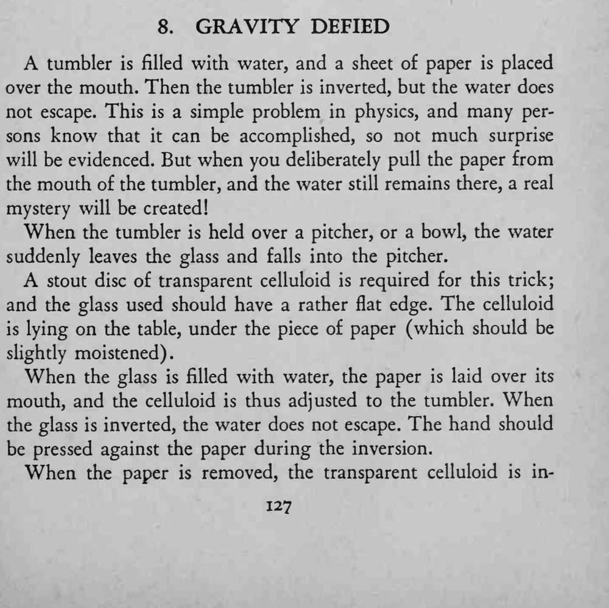
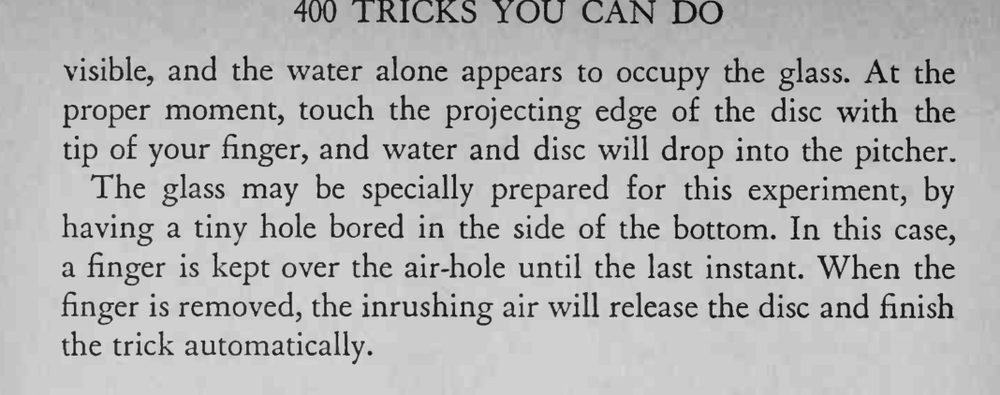

平底杯装满水、盖上一张纸，倒过来水竟不流；更奇的是把纸抽走，水还悬在杯口，直到轻碰杯沿，水和一张透明圆片才一起落下。
纸要微湿、杯口要平，圆片才贴得牢。


A tumbler is filled with water, and a sheet of paper is placed over the mouth. Then the tumbler is inverted, but the water does not escape. This is a simple problem in physics, and many persons know that it can be accomplished, so not much surprise will be evidenced. But when you deliberately pull the paper from the mouth of the tumbler, and the water still remains there, a real mystery will be created! When the tumbler is held over a pitcher, or a bowl, the water suddenly leaves the glass and falls into the pitcher. stout disc of transparent celluloid is required for this trick; and the glass used should have a rather flat edge. The celluloid is lying on the table, under the piece of paper (which should be slightly moistened). When the glass is filled with water, the paper is laid over its mouth, and the celluloid is thus adjusted to the tumbler. When the glass is inverted, the water does not escape. The hand should be pressed against the paper during the inversion. When the paper is removed, the transparent celluloid is in- visible, and the water alone appears to occupy the glass. At the proper moment, touch the projecting edge of the disc with the tip of your finger, and water and disc will drop into the pitcher. The glass may be specially prepared for this experiment, by having a tiny hole bored in the side of the bottom. In this case, a finger is kept over the air-hole until the last instant. When the finger is removed, the inrushing air will release the disc and finish the trick automatically.